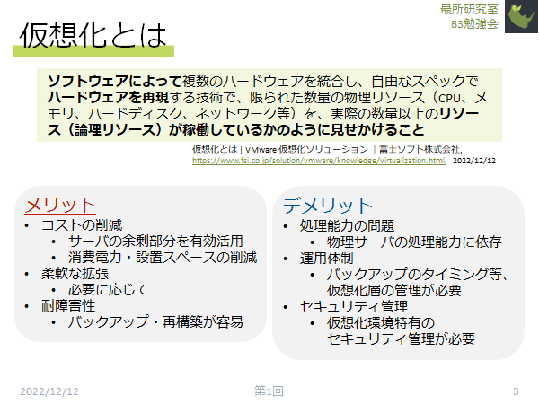
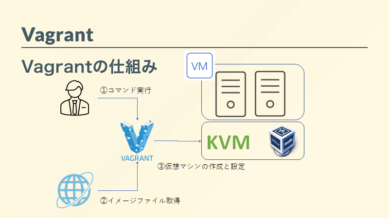
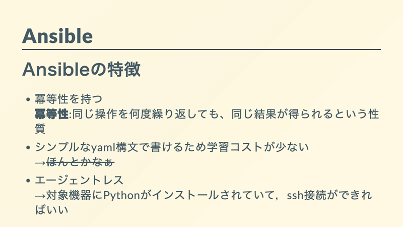
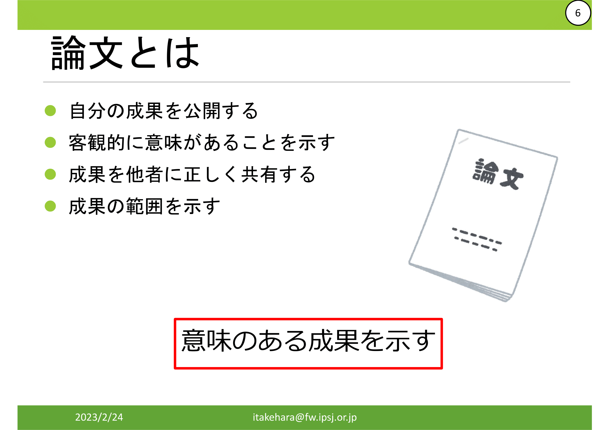
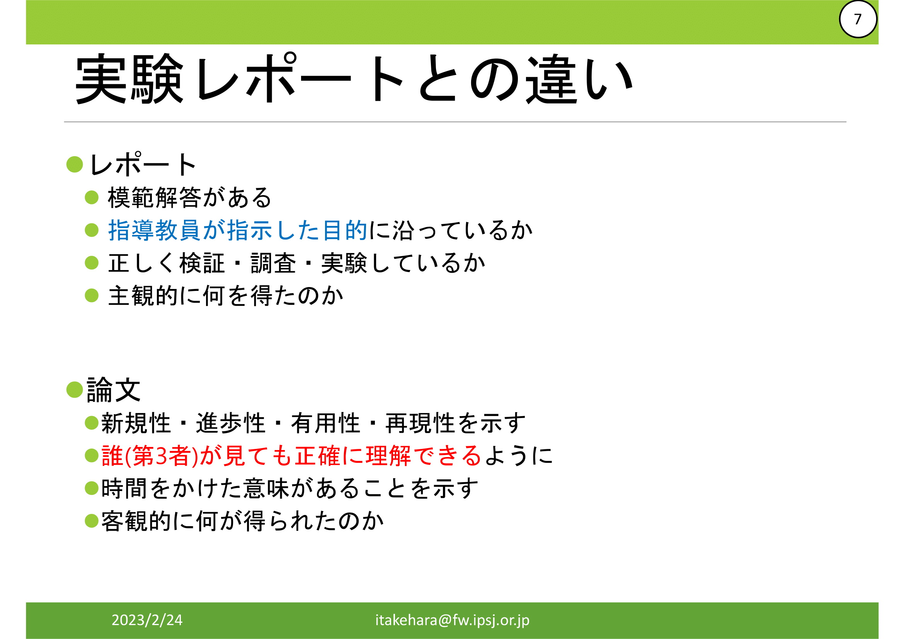
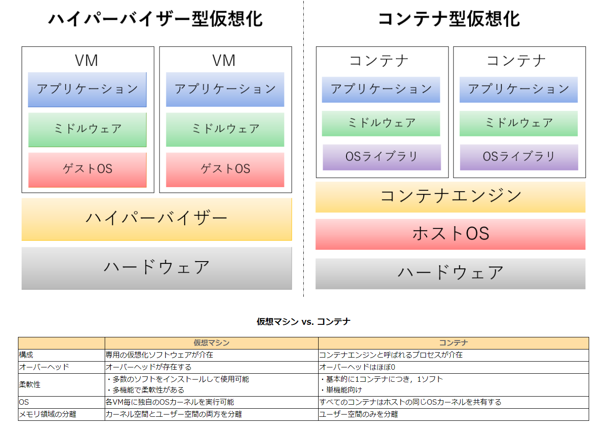
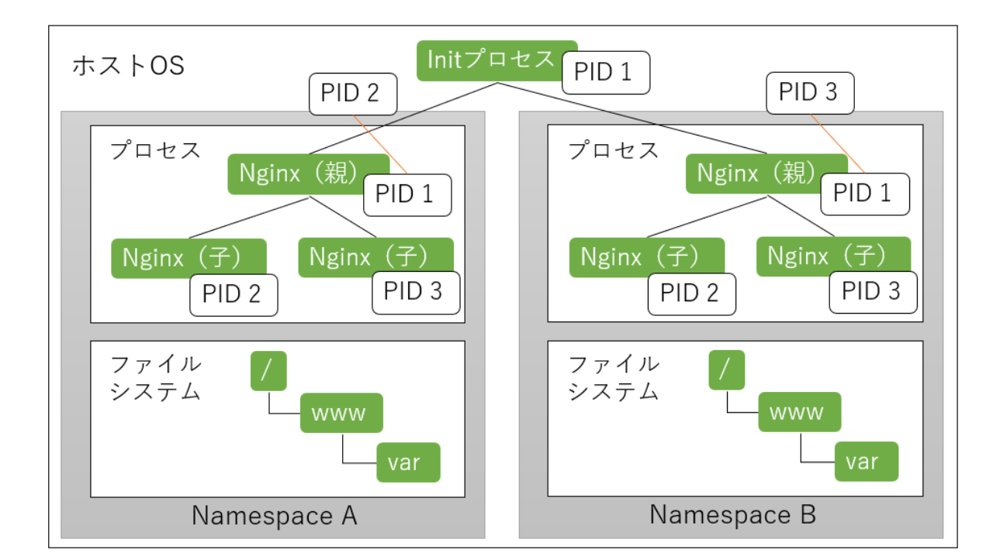
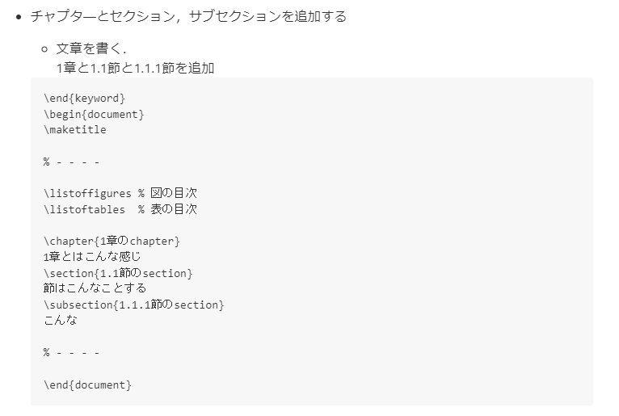
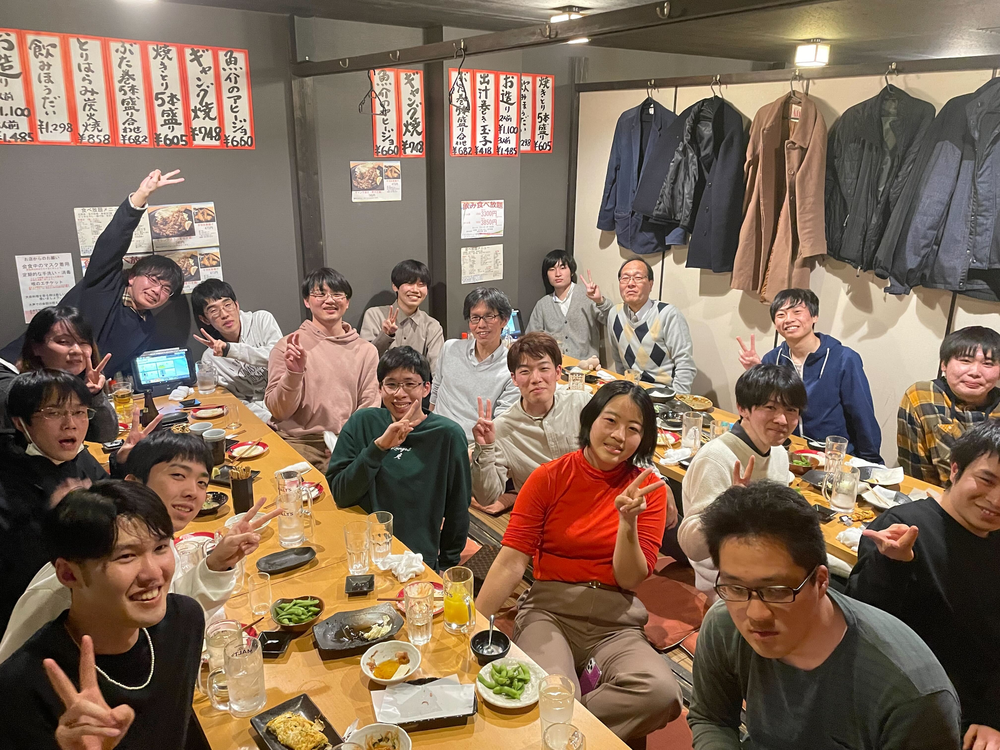

研究室配属
研究室見学や質問など御用がある方は、 contact[at]air.eng.kagawa-u.ac.jpに([at]を@に変更して) 御連絡ください。
研究の進め方
- 学生の自主性に任せます。大学への登校の強制はしません。
- 週に1度、ゼミで週間報告を行い、指導を受けます。
- それ以外の日は、SSHでリモートワークをする学生もいます。勉強会などの課外活動に精を出す学生もいます。
- 先輩が指導することも多いです。その指導を受けた後輩がやがて先輩となり，指導する側に回る…というサイクルです。
年間スケジュール
| 時期 | 内容 |
|---|---|
| 研究室配属~3月 | 興味がある分野の調査 |
| 4月 | 調査を基に研究テーマを決定 |
| 5月~8月 | 論文を読み、試作品を開発 |
| 9月 | 合同研究会を経て、中間発表 |
| 10月~12月 | 実装、実験、データ整理 |
| 1月~2月 | 卒論執筆、最終発表 |
求める学生像
- 自ら学習を進めていく人を求めています。
- コンピュータシステム、Web、サーバ、ネットワークに興味が有る人を歓迎します。
- プログラミング能力に関しては必要に応じて伸びていきます、できるに越したことはありません。
ゼミ・輪講
研究室全体としては、毎週1回ゼミを行っています。
2023年度前期は、水曜日の4コマ目に Teams によるオンラインゼミを行っています。
ゼミでは、各自の研究の途中経過についての報告を行っています。
これらの報告内容は、 esa.io にて管理しています。
また、就活や進学の現状報告や、個人的な活動で気付いた疑問について話し合うこともあります。
見学も可能です。希望者は事前に、トップページのメールアドレスにて連絡を取ってください。
3年後期から4年前期にかけて、専門分野の文献の輪読(輪講)しています。
また、学内外の研究室と勉強会や合同ゼミなども行っています。
お互いに発表や質疑を通じて研究の向上を目指します。
勉強会
研究室内の有志で勉強会を不定期に開いています。
年度ごとに、研究に必要な知識や、大学院の入試対策などを行ってきました。
主に仮想化や自動化についての勉強会を行っています。
2022年度勉強会
勉強会で使用した資料はこちらに掲載しております．
仮想化とは
最所研では仮想化を用いたシステム開発を行うことが多いため，仮想化とは何かを学び，仮想マシンを実際に構築して動かす演習です．
仮想化とは，ソフトウェアを用いて自由なスペックを設定したハードウェアを再現する技術です．
研究室のサーバを用いて実際に構築を行いました．
vagrantとansible
 最所研で主に用いられるサーバ構成管理ツールであるvagrant、ansibleについて特徴を紹介し、実際に動かしてみる演習です．
これら2つのツールは、研究を効率的に進めていく上では環境を再現するという点で大いに役立ちます。
vagrantはコマンド操作によってKVMやVirtualboxのような仮想マシンを構築するソフトウェアを動作させるソフトウェアです．vagrantを用いることによって、あらかじめ設定された環境を何度も再現する、仮想マシンの構築を自動化することができます．
ansibleは設定ファイルの変更やソフトウェアのインストールを行うソフトウェアです。シェルスクリプトに似た動作をしますが、ansibleは同じ操作を何度繰り返しても、同じ実行結果を得られるという特徴があります。
使用した資料はvagrant_ansible.pdfにあります。
論文の書き方
 研究を進める上で必ず論文を書く必要があります。論文を書く上で重要な考え方や授業レポートとの違い、進め方についての座学です．
論文とは、自分の成果を公開し、どのような意味があるのかを他者へ正しく共有するためのものです。
レポートには模範解答があり、教員の目的に沿っているかの確認、授業から何を学んだかをまとめるためのものであり主観的に書かれるものです。それに対して論文は、解答はなく、自分の成果に新規性や有用性があることを示すためのものです。第3者が見ても理解できる内容であり、客観的に書かれる必要があります．
論文を書くためには、いきなり本文を書き始めるのではなく、課題や結果、解決法などの内容の整理、章立てや大まかな内容を先に骨子として作ります。内容が決まったらアドバイスを貰い、それに従って本文を書き、アドバイスを受けて調整するという流れを繰り返します。
使用した資料はhowtowrite.pdfにあります。
コンテナ，Docker
 仮想化技術の1つであるコンテナと，それを用いるためのソフトウェアであるDockerについて学ぶ演習です．
研究室のサーバにコンテナを作成し，コンテナ内にnginxを構築，アクセスしてみるという演習を行いました．
使用した資料はyuyuyusei氏のGitHub.ioで公開されています。
Tex(テフ)の使い方
学術論文を作成する際によく使用されるツールであるTexの使用方法について学び，実際にpdfファイルを作成する演習です．
ファイルを作成するにあたり，ツールのインストールやどのようにファイルを記述していくかの演習を行いました．
使用した資料はHackMDを使って公開されています。
イベント
新ゼミ生歓迎コンパ、暑気払い、忘年会、追い出しコンパなど、季節毎に何らかのイベントは行っています。
また、近年は電子・情報工学科ビアガーデンの幹事も行っています。
過去の開催
2022年度追い出しコンパ
亀井研究室と合同で行いました。
- 日時:2022年3月6日(月) 18:00～
- 場所:焼き鳥ギャング 高松店
- 参加者
- 教員
- 最所先生，亀井先生
- 最所研
- D1 竹原
- M2 後藤
- M1 石塚，中村
- B4 岡本，衣川，樋口
- B3 岩本，上，田中，増田
- 亀井研
- B4 榎本，平見，道下
- B3 山田，山本，横山
- 教員
思い出や今後を語りながら飲食、卒業生の挨拶、卒業生から御世話になった先生方へのプレゼント渡し等を行いました。
学会発表
ある程度の成果が出た研究については学会主催の大会で発表しています。
大学院へ進学される方は発表していただくことが望ましいです。
大学院生は、必須で発表します。
基本的に、交通費や宿泊費は研究室が負担します。
今までの発表を 業績リスト にまとめています。
よく発表する学会/大会
- 電気関係学会 四国支部連合大会
- 情報処理学会 全国大会
- International Conference on Electronics and Software Science
使用するプログラミング言語/ツール
目的に応じて、使用する言語は異なりますが、現在のところ、C、Go、Pythonなどを用いた開発を行っています。
あまり言語に制限はないので、各自が良いと思う言語を使うことが多いです。
研究室で運用している、仮想マシンや構築には、VagrantやAnsibleを使います。
サーバはLinuxが多く、基本的にコマンド操作を行います。
そのため、それらの知識や経験があることが望ましいです。
研究成果は、Gitを用いたバージョン管理により、 GitHubのOrganization にて管理します。
卒論は、GnuplotやTeX/LaTeXを使って執筆します。
スライドは、MS PowerPointを使う学生が多いです。
普段の連絡には、メーリングリストや Slack を用いています。
新型コロナウイルスによる、自粛に伴い、Teamsを併用しています。